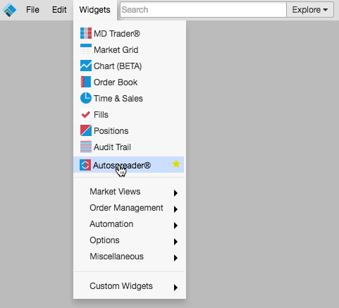
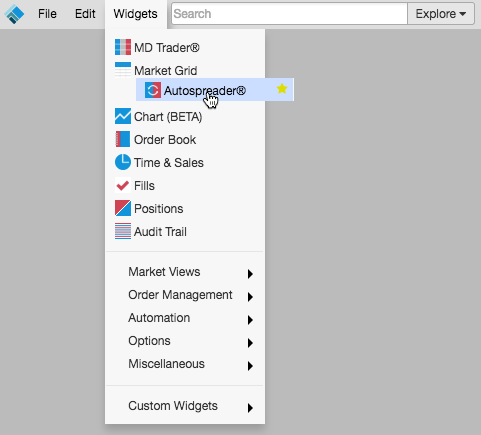

Rearranging the menu favorites
To rearrange the items in the favorites section:
-
Press and hold the mouse button on the widget you want to move.

-
Drag the widget to the desired location in the favorites section.

-
Release the mouse button.

Note: When displaying multiple widget icons in search results, they are shown in the new order they appear in the menu.